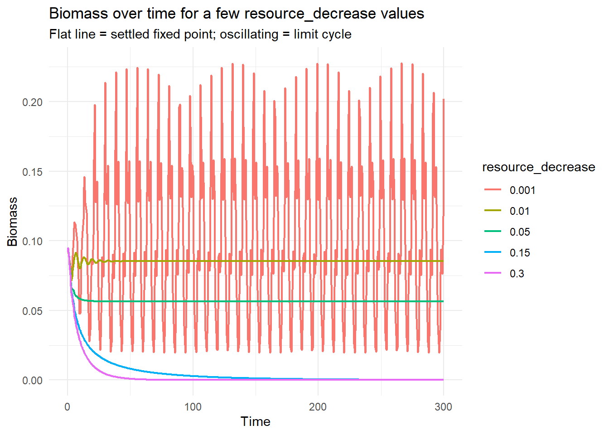
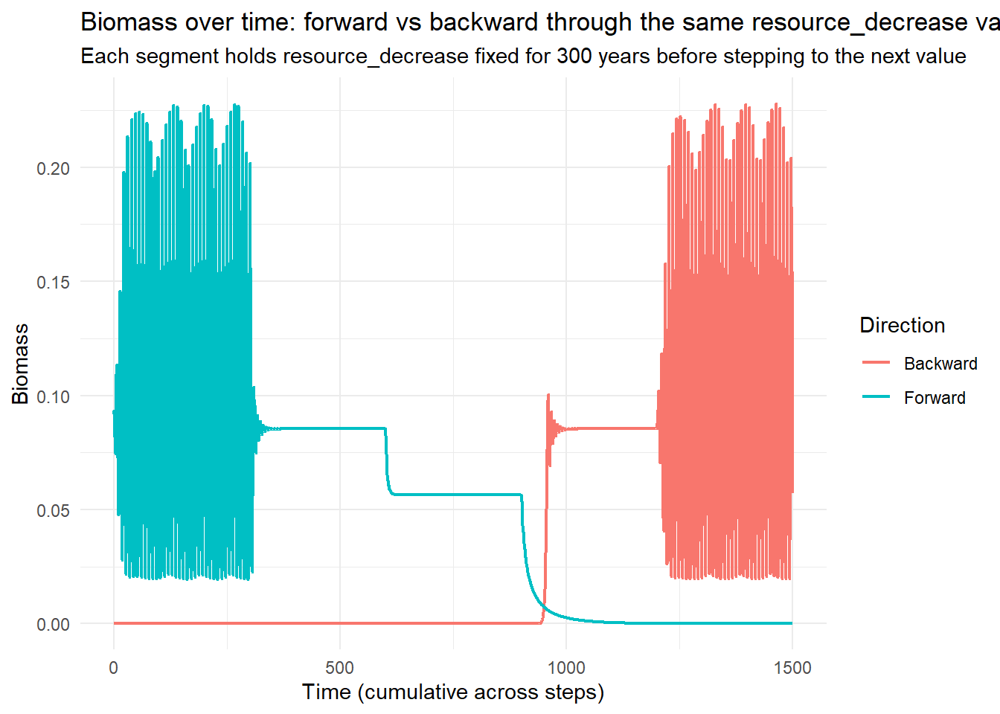

Code
library(mizer)
library(patchwork)
library(reshape2)
library(plotly)
library(dplyr)
library(mizerExperimental)
library(tidyverse)
library(glue)
library(ggplot2)
library(colorRamps)
library(future.apply)Samia
July 6, 2026
Day 20 widened Day 18’s narrow, ambiguous 10-point sweep to a 40-point, log-spaced grid and reran it on mizer 3.1’s second-order finite-volume scheme plus external diffusion. The post originally read that result backwards: it said the forward/backward gap closed. Re-reading the actual figure showed the opposite - the backward branch collapses to zero around resource_decrease ≈ 0.02, while the forward branch keeps a nonzero cycle out to ≈ 0.15–0.2, a wide and unambiguous hysteresis loop, much bigger than Day 18’s narrow rd ≈ 0.008 ambiguity. The title, description, and body of that post have all been corrected to say so. The diffusion caveat stands either way: ext_diffusion was filled as a flat constant across all sizes rather than mizer’s own allometric w^(n+1) shape, so the result (now: a wide hysteresis loop, not a closed gap) still needs to be reproduced with diffusion set up properly before it can be trusted.
Today picks that fix up directly, and then goes further: instead of only ever looking at each resource_decrease value’s settled max/min biomass, it looks at biomass over time itself, to see the shape of the oscillation (or its absence) directly, and to watch the hysteresis play out step by step rather than reading it off a summary curve.
make_second_order_params() carries over the second-order finite-volume scheme from Day 20, but fixes the diffusion setup that post’s “A Catch” section flagged as wrong. Instead of filling an ext_diffusion array with a flat constant, it now sets the baseline D_ext rate directly in species_params via given_species_params(), and lets mizer derive its own w^(n+1) allometric shape from that rate:
make_second_order_params <- function(lambda = 2.05, resource_decrease = 0.001,
second_order = TRUE, ext_diff = 0.01) {
a0 <- 100
kappa <- a0 * exp(-6.9 * (lambda - 1))
no_w <- round(log(66.5 / 0.0003) / 0.1)
params <- newSingleSpeciesParams(
species_name = "Anchovy",
w_min = 0.0003, w_max = 66.5, w_mat = 10,
no_w = no_w, lambda = lambda, kappa = kappa,
alpha = 0.1, gamma = 750, ks = 0
)
r <- getResourceRate(params) * resource_decrease
params <- setResource(params, resource_rate = r,
resource_dynamics = "resource_semichemostat",
balance = TRUE)
# given_species_params<-() is mizer's "stronger" setter: unlike
# species_params<-(), it also triggers a recalculation of the derived
# parameters, so setting the baseline D_ext rate here and letting mizer
# recompute is the fix Day 20 flagged as still needed -- editing the
# baseline rate and letting setExtDiffusion()'s w^(n+1) shape come from
# mizer itself, rather than constant-filling the array by hand.
if (second_order) {
second_order_w(params) <- c(flux = "centred", bin_average = TRUE)
}
given_species_params(params)$D_ext <- ext_diff
params
}rd_time_series picks five resource_decrease values spanning Day 20’s hysteresis region: deep in the oscillating regime, through the transition, and out past where the backward branch had collapsed.
The first pass runs each resource_decrease value on its own, 300 years, starting from mizer’s default initial state every time rather than carrying anything over between runs:
biomass_over_time <- lapply(rd_time_series, function(rd) {
p <- make_second_order_params(resource_decrease = rd)
sim <- project(p, t_max = 300, dt = 0.1, t_save = 0.5,
progress_bar = FALSE, effort = 0, method = "tr_bdf2")
bm <- getBiomass(sim)[, "Anchovy"]
data.frame(time = as.numeric(names(bm)), biomass = as.numeric(bm),
resource_decrease = factor(rd))
})
biomass_over_time_df <- bind_rows(biomass_over_time)ggplot(biomass_over_time_df, aes(x = time, y = biomass, color = resource_decrease)) +
geom_line(linewidth = 0.8) +
labs(x = "Time", y = "Biomass",
title = "Biomass over time for a few resource_decrease values",
subtitle = "Flat line = settled fixed point; oscillating = limit cycle",
color = "resource_decrease") +
theme_minimal()
This is the baseline case: each value is only ever approached one way, from the same default starting point, so it says nothing yet about direction-dependence. It’s the “normal” run the next section compares against.
The more useful version carries state between steps the same way Day 20’s fwd_so/bwd_so sweep did: each resource_decrease value’s run starts from the previous value’s settled abundances, instead of resetting every time. run_biomass_time_series() does that, keeping the full biomass trace (not just the settled max/min) for every step, with time offset cumulatively across steps so each direction reads as one continuous trajectory:
run_biomass_time_series <- function(rd_seq, init_n = NULL, init_n_pp = NULL, t_run = 300) {
state_n <- init_n
state_npp <- init_n_pp
t_offset <- 0
segments <- vector("list", length(rd_seq))
for (i in seq_along(rd_seq)) {
p <- make_second_order_params(resource_decrease = rd_seq[i])
if (!is.null(state_n)) {
p@initial_n[] <- state_n
p@initial_n_pp[] <- state_npp
}
sim <- project(p, t_max = t_run, dt = 0.1, t_save = 0.5,
progress_bar = FALSE, effort = 0, method = "tr_bdf2")
bm <- getBiomass(sim)[, "Anchovy"]
tv <- as.numeric(names(bm))
last <- dim(sim@n)[1]
state_n <- sim@n[last, , ]
state_npp <- sim@n_pp[last, ]
segments[[i]] <- data.frame(time = tv + t_offset, biomass = as.numeric(bm),
resource_decrease = rd_seq[i])
t_offset <- t_offset + max(tv)
}
list(df = bind_rows(segments), n_final = state_n, npp_final = state_npp)
}
fwd_ts <- run_biomass_time_series(rd_time_series)
bwd_ts <- run_biomass_time_series(rev(rd_time_series),
init_n = fwd_ts$n_final,
init_n_pp = fwd_ts$npp_final)
biomass_fwd_bwd_df <- bind_rows(
fwd_ts$df %>% mutate(direction = "Forward"),
bwd_ts$df %>% mutate(direction = "Backward")
)ggplot(biomass_fwd_bwd_df, aes(x = time, y = biomass, color = direction)) +
geom_line(linewidth = 0.8) +
labs(x = "Time (cumulative across steps)", y = "Biomass",
title = "Biomass over time: forward vs backward through the same resource_decrease values",
subtitle = "Each segment holds resource_decrease fixed for 300 years before stepping to the next value",
color = "Direction") +
theme_minimal()
Reading the five 300-year segments left to right:
Forward (0.001 → 0.01 → 0.05 → 0.15 → 0.3): strong limit-cycle oscillation at rd = 0.001 (biomass swinging roughly 0.02–0.22), settling almost immediately to a steady ~0.085 at rd = 0.01, then a lower steady ~0.055 at rd = 0.05, then collapsing to near-zero for both remaining segments (rd = 0.15, 0.3).
Backward (0.3 → 0.15 → 0.05 → 0.01 → 0.001, starting from wherever forward ended up, already collapsed): stays collapsed near zero through all three of rd = 0.3, 0.15, and 0.05, only recovering to the same ~0.085 steady state once rd drops to 0.01, and only re-entering the large oscillation once rd reaches 0.001.
The disagreement at rd = 0.05 is the headline: forward finds a healthy ~0.055 steady population there, backward is still fully collapsed. Which state the model is in at that resource_decrease value depends on which direction it was approached from, not on the value itself. That’s the same wide hysteresis loop Day 20 found in the bifurcation diagram, now visible directly in the time series rather than inferred from a settled max/min summary.
A few further ideas got started in 21_experiments.R today but aren’t in a state to draw conclusions from yet, and are left here as flagged rather than fixed:
setBevertonHolt() recruitment: an attempt to add stock-recruitment density dependence into make_second_order_params() currently builds the params object twice (the first build, including the given_species_params()$D_ext assignment, gets discarded before setBevertonHolt() runs on a second, fresh build), so as written it isn’t actually testing what it looks like it’s testing.Settle on one forward/backward convention for future chained comparisons, rather than swapping which direction runs fresh vs chained ad hoc between drafts.
Finish the Beverton-Holt attempt properly once the double-build is fixed, to see whether stock-recruitment density dependence changes the size of the hysteresis loop found on Day 20/21.
Keep working through Nonlinear Dynamics and Chaos: This is to build the background needed to properly characterise the bifurcation (and the parked chaos-looking cell from Day 19), rather than continuing to read these sweep plots at face value.
Investigate the juvenile-biomass conundrum from Day 19: Will do this via changing the juvenile slope ad increasing the size range of the species.